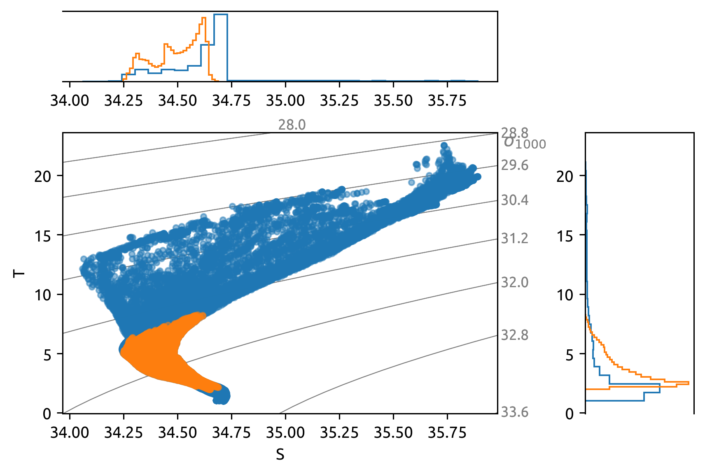

Eddy variance generation along GO-SHIP lines
Contents
Eddy variance generation along GO-SHIP lines¶
This notebook just looks to see where the large eddy stirring signal might be.
Uses Ke_cole * dTiso ** 2;
Ke_groeskamp * dTiso ** 2;
T-S Diagram
Surface EKE
import cf_xarray as cfxr
import dcpy
import matplotlib as mpl
import xarray as xr
import eddydiff as ed
mpl.rcParams["figure.dpi"] = 140
colegrad = xr.open_dataset("../datasets/cole-clim-gradient.nc")
cole = ed.read_cole()
def interp_cole(section, cole, colegrad):
result = xr.Dataset()
result["Ke"] = cole.diffusivity.interp(
lat=p06.lat.reset_coords(drop=True), lon=p06.lon.reset_coords(drop=True)
)
result.Ke.attrs = {"long_name": "$K_e$", "units": "m²/s"}
result["dTiso"] = colegrad.dTiso.interp(
lat=p06.lat.reset_coords(drop=True), lon=p06.lon.reset_coords(drop=True)
).interp(pres=cole.pres)
result.dTiso.attrs = {"long_name": "$|∇T_{iso}|$", "units": "m²/s"}
result["χe"] = result.Ke * result.dTiso ** 2
result.χe.attrs = {"long_name": "$K_e^{cole} |∇T_{iso}^{argo}|²$", "units": "°C²/s"}
return result
P06¶
p06 = xr.open_dataset("/home/deepak/work/eddydiff/datasets/P06/p06.nc")
sectionvar = interp_cole(p06, cole, colegrad)
sectionvar.χe.cf.plot(
robust=True, x="lon", norm=mpl.colors.LogNorm(), cmap=mpl.cm.magma
)
<matplotlib.collections.QuadMesh at 0x7f0c4b1ecf70>
subset = p06 # .where(p06.lon > 180)
_, ax = dcpy.oceans.TSplot(subset.S, subset.T, Pref=1000, hexbin=False, color="C0")
# subset= p06.where( (p06.pres < 500))
# dcpy.oceans.TSplot(subset.S, subset.T, Pref=1000, hexbin=False, color='C0')
subset = p06.where((p06.pres > 750) & (p06.pres < 2050))
dcpy.oceans.TSplot(subset.S, subset.T, Pref=1000, ax=ax, hexbin=False, color="C1");
